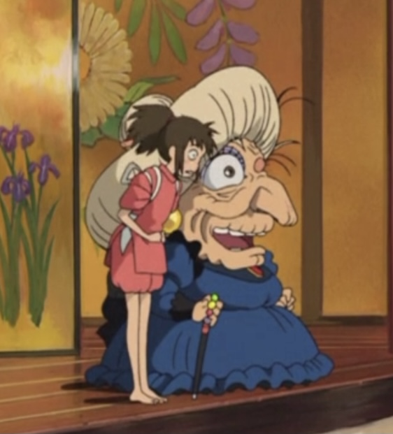
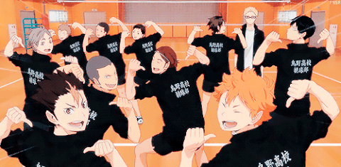
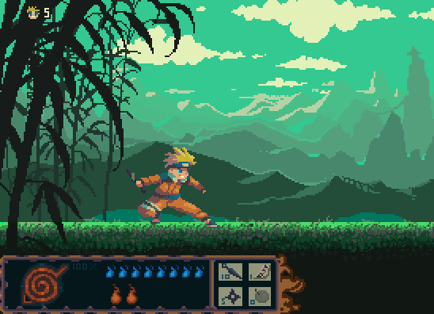
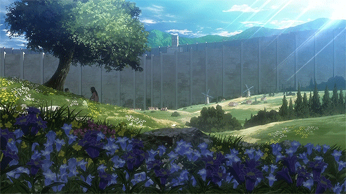
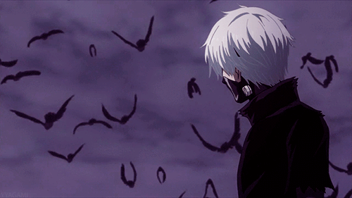

Anime Suggestions: Attack on Titan, Demon Slayer, Komi Can't Communicate, Violet Evergarden, Snow White with the Red Hair
Movies: Your Name, Josee the Tiger and the Fish, Spirited Away, Penguin Highway, Howl's Moving Castle
Anime Suggestions: Haikyuu!!, Jujutsu Kaisen, Demon Slayer, Kuroko's Basketball, Free
Movies: Belle, Josee the Tiger and the Fish, Silent Voice, Ponyo, Your Name
Anime Suggestions: Beastars, Violet Evergarden, Akame Ga Kill, Bunny Girl Senpai, Given
Movies: A Whisker Away, Flavors of Youth, I Want to Eat Your Pancreas
Anime Suggestions: Kuroko's Basketball, Saiki K, Erased, Violet Evergarden, Given, Sailor Moon
Movies: The Secret World of Arrietty, Ponyo, A Silent Voice, Doukyuusei
Anime Suggestions: Naruto, Bungo Stray Dogs, Horimiya, Code Geass, Parasite, Sword Art Online, Angel Beats,
Devilman Crybaby, Food Wars, Blue Period, Charlotte, Great Pretender, Magi, A Lull in the Sea, Noragami
Movies:Silent Voice, Your Name
Anime Suggestions: Attack on Titan, Erased, Death Note, My Hero Academia, Demon Slayer, Deca-Dence
Movies: Made in Abyss, Ponyo, Your Name
Anime Suggestions: Erased, The Promise Neverland, Tokyo Ghoul, Toradora
Movies: Howl's Moving Castle, Ponyo, Spirited Away, Silent Voice
Anime Suggestions: Fairy Tail, Komi Can't Communicate, Saiki K, Is it Wrong to Pick up Girls in a Dungeon?
Movies: Ponyo, My Hero Academia Movies, Spirited Away
Anime Suggestions: Given, Jujutsu Kaisen, Steins Gate, Saiki K, Chain Saw Man, Mushoku Tensei, Noragami
Movies: Umibe no Etranger, Given Movie